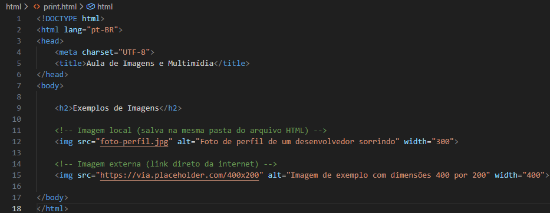
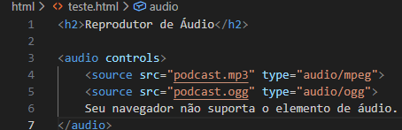
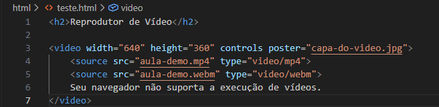

Estudo 4: Imagens e Multimídia
Com a estrutura, os textos e os links dominados, o próximo passo para criar páginas atrativas é adicionar mídias. Nesta aula, você aprenderá a inserir imagens, áudios e vídeos nativamente no seu site utilizando HTML.
Inserindo Imagens (A Tag <img>)
A tag <img> é responsável por exibir imagens na página. Ela é uma tag auto-fechável (não possui </img>) e exige dois atributos fundamentais: src (source / fonte): O caminho ou URL onde a imagem está salva. alt (alternative text / texto alternativo): A descrição da imagem. É essencial para acessibilidade (leitores de tela para deficientes visuais) e aparece caso a imagem falhe ao carregar.
- src (source / fonte): O caminho ou URL onde a imagem está salva.
- alt (alternative text / texto alternativo): A descrição da imagem. É essencial para acessibilidade (leitores de tela para deficientes visuais) e aparece caso a imagem falhe ao carregar.
Exemplo Prático de uso
Inserindo uma imagem local

Clique aqui para ver mais informações
Dicas: Atributos de Tamanho: Você pode ajustar o tamanho diretamente no HTML usando width (largura) e height (altura) em pixels, embora o ideal em projetos profissionais seja controlar o tamanho via CSS.
Inserindo Áudio (A Tag <audio>)
Para reproduzir arquivos de som (como MP3 ou WAV), usamos a tag <audio>. Ao adicionar o atributo controls, o navegador exibe automaticamente os botões de play, pause e controle de volume.

<source> listar o arquivo em múltiplos formatos. O navegador usará o primeiro que for compatível.
Texto de fallback: O texto dentro da tag só aparece se o navegador do usuário for muito antigo e não suportar áudio.
Inserindo Vídeo (A Tag <video>)
A tag <video> funciona de maneira muito parecida com a de áudio, permitindo exibir arquivos de vídeo (como MP4 ou WebM) diretamente na página.

Resumo Visual de Tags de Mídia
| Tag | Tipo de Fechamento | Principais Atributos |
|---|---|---|
<img> |
Auto-fechável |
src, alt, width, height
|
<audio> |
Dupla (<audio>...</audio> )
|
controls, autoplay, loop, muted
|
<video> |
Dupla (<video>...</video> )
|
src, controls, width, height, poster
|